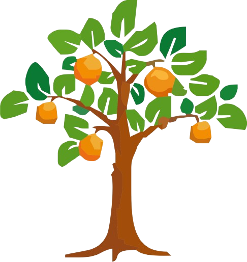

📘 Simulador Química - Admisión Universitaria
Basado en módulo completo: Teoría Atómica, Tabla Periódica, Enlace Químico, Nomenclatura, Estequiometría, Cinética y Equilibrio.
📊 Resultado Final: 0/100
Análisis Pedagógico IA

Basado en módulo completo: Teoría Atómica, Tabla Periódica, Enlace Químico, Nomenclatura, Estequiometría, Cinética y Equilibrio.